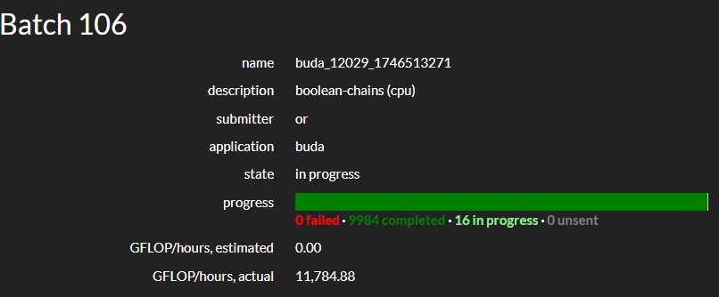

In the last report, I wrote that we are a little bit behind the schedule, but we are still on track to release the new version of BOINC soon. Last month we made an alpha release 8.2.1 for Windows and 8.2.2 for Linux. The Linux version has a bigger version number because we had to fix some Linux specific bugs that were found during the testing. MacOs version is still in the works due to the MacOS specific issues with the new BUDA functionality. To be completely honest, Windows version that relies on WSL has a little issue as well, but it's not critical, and we are working on the fix.
At the moment, new BUDA functionality is actively tested on the BOINC Central platform. We are happy to announce that we have a first scientist who is currently testing his application on the platform. Even with the small number of users on BOINC Central, we already have around 10000 jobs successfully completed. We see a great potential in this new functionality, and we are looking forward to more scientists joining us and testing their applications on the platform. A great amount of fixes and improvements were made to the BUDA functionality during last month, that will be helpful for the scientists who are going to use it in the future.
We plan to release the new version of BOINC in the next month, and we are working hard to make it happen.